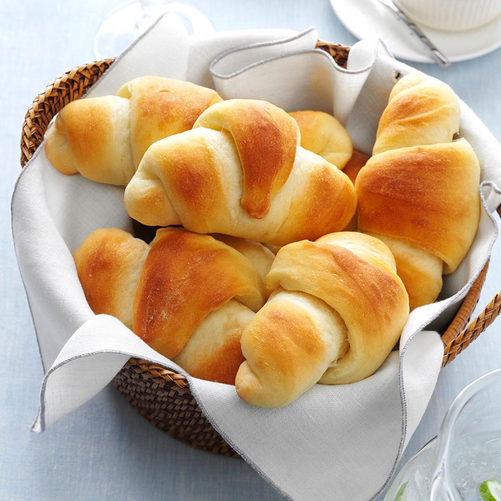

Butter Horn Rolls
These incredible rolls come from a neighborhood recipe book from my youth, with the recipe by Cathy Faerber

Description
Growing up, I had a friend whose mom was an incredible baker. My friends and I would be drawn to their house floating through the air like Looney Toons whenever her oven was going.
Ingredients
- 2 packages yeast, softened in 1/2 cup of warm water
- 1 1/2 cups milk, scalded
- 1 cup butter
- 1 cup sugar
- 2 tsp. salt
- 6 eggs, beatenh
- 9 cups flour-sifted
- butter-melted
Steps
- In a large bowl or mixer, combine scladed milk, butter, sugar, and Salt. Cool to lukewarm.
- Add yeast mixture and mix well
- Add eggs and flour
- Mix to a soft dough. Turn dough out onto a lightly floured surface and knead until dough is smooth and elastic.
- Place in a greased bowl, cover, and let rise until double in size, about 1 1/2 hours.
- Divide dough into 4 equal parts and roll out into a circle.
- Spread melted butter over dough
- Cut into wedes or triangles and roll from wide end up. Let rise for 1 hour
- Bake at 350 degrees F with convection on the center rack for 15 minutes, turning pans at 7 minutes